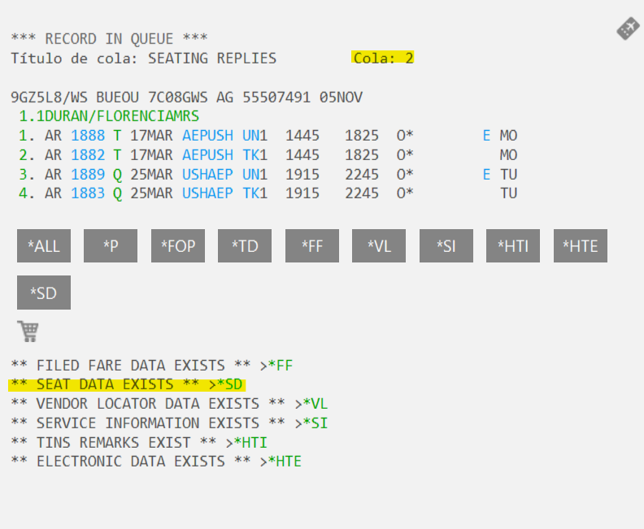
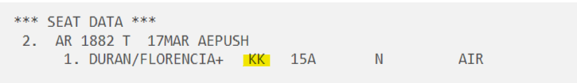
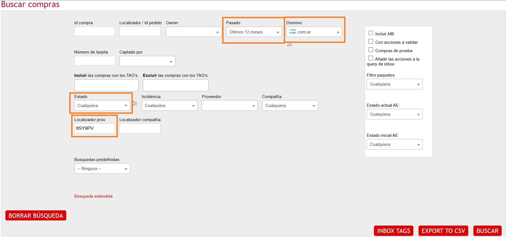
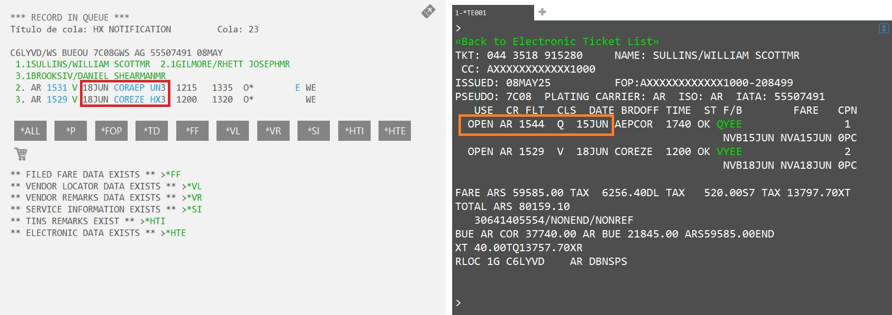
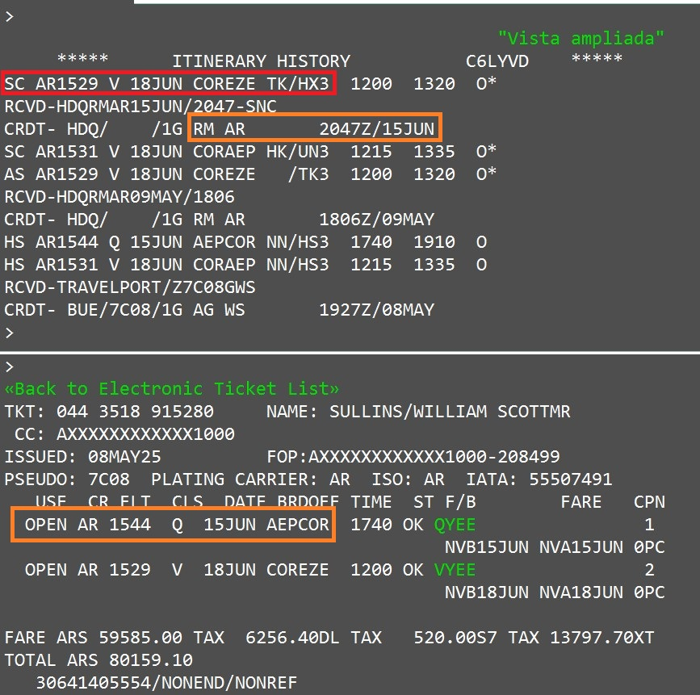
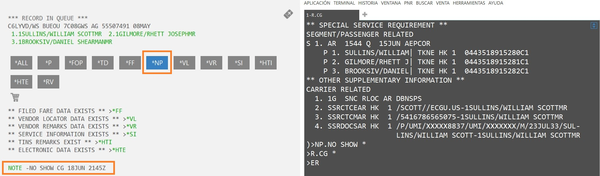
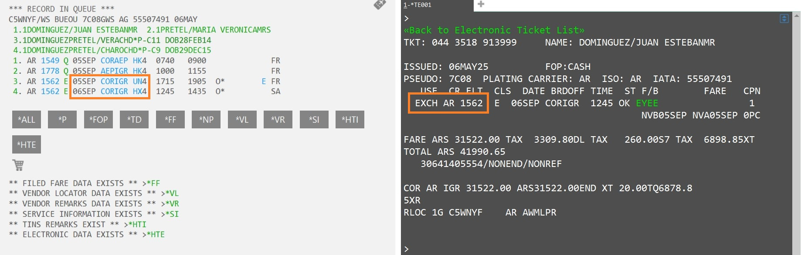
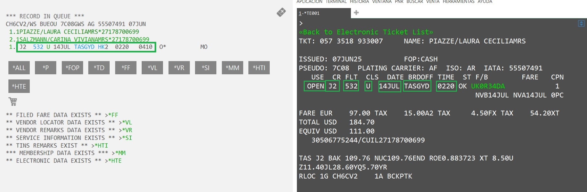
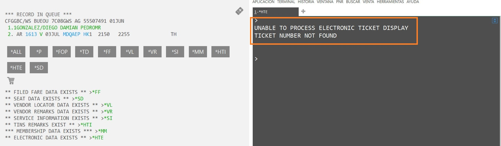

💺 Cola 2 - Asientos
Esta cola contiene las reservas que tienen una asignación de asientos. Verás que en el PNR se ha creado el campo SD donde podemos comprobar los números de asiento:

Debemos entrar al campo SD y verificar el estado. Los asientos pueden estar en KK (Confirmado por aerolínea) o en HX/UN (Cancelado).

Si los asientos están en KK:
Debemos pasarlos a HK para confirmar. Existen dos métodos según el estado del itinerario:
Opción A: Itinerario completo en HK
Si todos los vuelos ya están confirmados, simplemente usamos:
Esto confirmará automáticamente todos los asientos a HK.
Opción B: Itinerario con cambios (TK o UN)
⚠️ ¡OJO! NO USAR @ALL: Si haces @all confirmarás el cambio de horario o cancelación del vuelo sin procesarlo correctamente.
En este caso, confirma únicamente los asientos con:
Una vez confirmados los asientos, eliminamos la reserva de la cola con el comando QR.
Si los asientos están en UN o HX:
- Revisar Admin: Verificar si la petición de asientos fue realizada a través de Atrápalo.
- Gestión Interna: Si es nuestra, avisar al responsable de la tarea de asientos para su gestión. Quitar de cola con QR sin tocar la reserva.
- Gestión Directa: Si no hay registro en Admin ni notas de compañeros, el cliente lo gestionó directo con la aerolínea. No tocar la reserva y quitar de cola con QR.
🔄 Cola 3 - Sincronización
Estas son actualizaciones realizadas directamente por la compañía aérea: toma de nuevos lugares o reubicaciones en el mismo aeropuerto (que pueden hacer saltar las plazas en KK).
PNR en HK
Si el itinerario ya figura todo en HK:
- Comprobar con
*HTEsi el itinerario en el billete es idéntico al del PNR. - Si coinciden, simplemente limpiar de la cola.
PNR en TK o KK
Si hay trayectos pendientes de confirmar:
- Actualizar el PNR con
@ALL. - Revisar los VR de la compañía por si hay notas de reubicación o cambios.
- Verificar que el Admin esté actualizado con estos cambios.
• Si el itinerario NO está actualizado en Admin ↠ Mover a QEB/61.
• Si el itinerario SÍ está actualizado en Admin ↠ Sacar de cola con QR.
🎫 Cola 10 - Ticket Review
El objetivo de esta cola es verificar la emisión efectiva de los billetes y limpiar las reservas fallidas.
Con campo HTE
Si visualizas el campo HTE, el billete está emitido correctamente.
Sin campo HTE
Indica que el billete no está emitido. Debes buscar el pedido en Admin con filtros:
📍 Acción según estado en Admin:
Cargar nota en Galileo: NP.PDTE DE EMISIÓN y mantener en cola hasta que se emita.
Eliminar lugares con XI, poner nota NP.NO FINALIZADO y luego QR.
Nota: Si no hay itinerario ni HTE, revisa las notas del PNR (*NP). Si no hay gestión previa, procede a verificar el Admin como se indica arriba.
📝 Cola 16 - Vendor Remark (VR)
Aquí se reciben los VR (Vendor Remarks), notas enviadas por las aerolíneas. Algunas requieren gestión urgente y otras son solo informativas. Accede con Q/16.
⏳ Tiempo Límite de Emisión (ADTK)
Ejemplo: *ADTK1GTOVY ON/BEFORE 01DEC...
- Emitido: Hacer QR directamente.
- HK no emitido (Admin Activo): Si está pendiente de emisión, hacer QR.
- Admin Anulado/No Dispo: Cancelar plazas con XI y hacer QR.
🚫 No Show
- Con trayecto HX: Verificar si está en la Q/23 con QW. Si no está, moverla con QEB/23.
- Sin trayecto HX: Poner nota NP.NOSHOW y hacer QR.
👥 Duplicidad
Verificar si existe otro PNR en Galileo para el mismo cliente.
- No hay duplicidad: Nota en Admin y GDS + QR.
- Sí hay duplicidad: Llamar a la Cía para ver cuál es el primer billete. Contactar al cliente para informar que debe pedir reembolso de la última reserva. Dejar notas en Admin y GDS.
📞 Contacto y Datos Adicionales
Localizador VY: En vuelos IB operados por VY, copiar el localizador de la aerolínea en las notas de Admin.
Solicitud Contacto Pax: Cargar SSR con datos de Admin:
SI.P1/SSRCTCMBAHK1/933197570/ES
✈️ Trayecto Cancelado
- No emitido: Si en Admin está cancelado/abandonado ↠ XI + nota + QR. Si está activo ↠ Avisar al agente asignado.
- Emitido: Mover a la QEB/23 para su gestión definitiva.
🚨 Cola 23 - Cancelaciones (Segmentos HX)
Son reservas que tienen algún trayecto en HX. Debemos verificar el motivo de la cancelación antes de gestionar.
1. Reservas sin itinerario y sin ticket
Escenario ideal de trabajo limpio. Buscar el pedido en Admin Vuelos con estos filtros:

Si el estado en Admin es Cancelado/Anulado, solo sacamos de cola:
2. Reservas en HX sin ticket
Reservas no emitidas donde la aerolínea canceló los lugares.
Caso 1 - Pedidos por trabajar
Admin en estado Confirmado/Pendiente:
- Limpiar PNR: @ALL
- Firmar y Cerrar: R.CG + ER (doble)
- Nota Admin: "Tramos HX, limpio de Q23"
- Avisar al agente asignado y hacer QR.
Caso 3 - Estado Vendido (Error)
Pedido en Vendido pero sin ticket. Es un error crítico:
- Cargar nota: NP.VXXXXXX (Loc. Atrápalo)
- Firmar y Cerrar: R.CG + ER
- Mover a Cola 69 (Casos de Error): QEB/69
3. Reservas en HX con ticket emitido
Debemos comprobar el estado del ticket con el comando *HTE.
📉 Escenario: Fecha pasada / No Show
Si el ticket figura en OPEN pero la fecha de vuelo ya pasó:

Verificar historial de cancelación con *HI:


Ticket EXCH / USED
La aerolínea tomó el control o el pax ya viajó.

Acción: @ALL + QR
Tramos HK Sincronizados
Si el agente ya gestionó pero el PNR sigue en cola.

Verificar Vuelo/Clase/Fecha/Ruta. Si OK ↠ QR
⚠️ Ticket sin acceso
Si no hay acceso al ticket, la aerolínea tomó el control (Tratar como EXCH).

Acción: Limpiar itinerario (@ALL) y sacar de cola (QR).